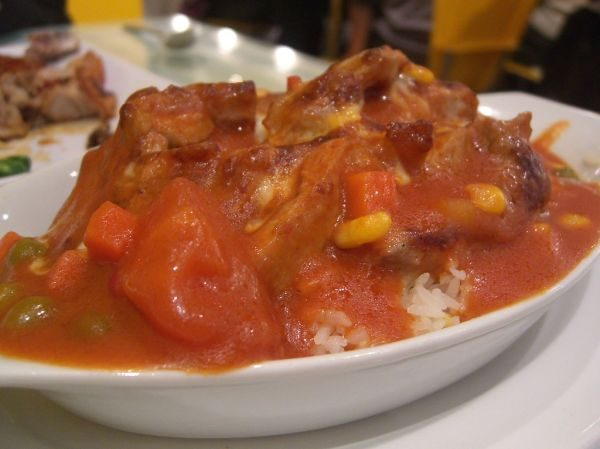

Baked Pork Chops

Photo: avlxyz (CC BY-SA 2.0)
Seasoned pork chops browned in a skillet, then baked in cream of chicken soup and topped with grated Parmesan cheese and breadcrumbs.
Directions
- Combine garlic powder, Italian seasoning, and pepper. Sprinkle over both sides or pork chops.
- Brown pork chops in oil heated at medium high in large skillet.
- Place chop in a 2 quart shallow baking dish.
- In same skillet, combine soup and water, bring to a boil. Pour over chops. Sprinkle with mixture o Parmesan cheese and bread crumbs. Bake coverd in preheated 350 degree oven for 45 minutes. Remove cover and continue baking for 15 minutes.
- Combine the garlic powder, Italian seasoning, and black pepper. Sprinkle over both sides of the pork chops.
- Brown the pork chops in the oil heated at medium-high in a large skillet.
- Place the chops in a 2-quart shallow baking dish.
- In the same skillet, combine the cream of chicken soup and water and bring to a boil.
- Pour the soup mixture over the chops.
- Sprinkle with the mixture of Parmesan cheese and breadcrumbs.
- Bake, covered, in a preheated 350 degree oven for 45 minutes.
- Remove the cover and continue baking for 15 minutes.
Goes well with
https://baron-3dl.github.io/normans-kitchen/recipe/baked-pork-chops.html